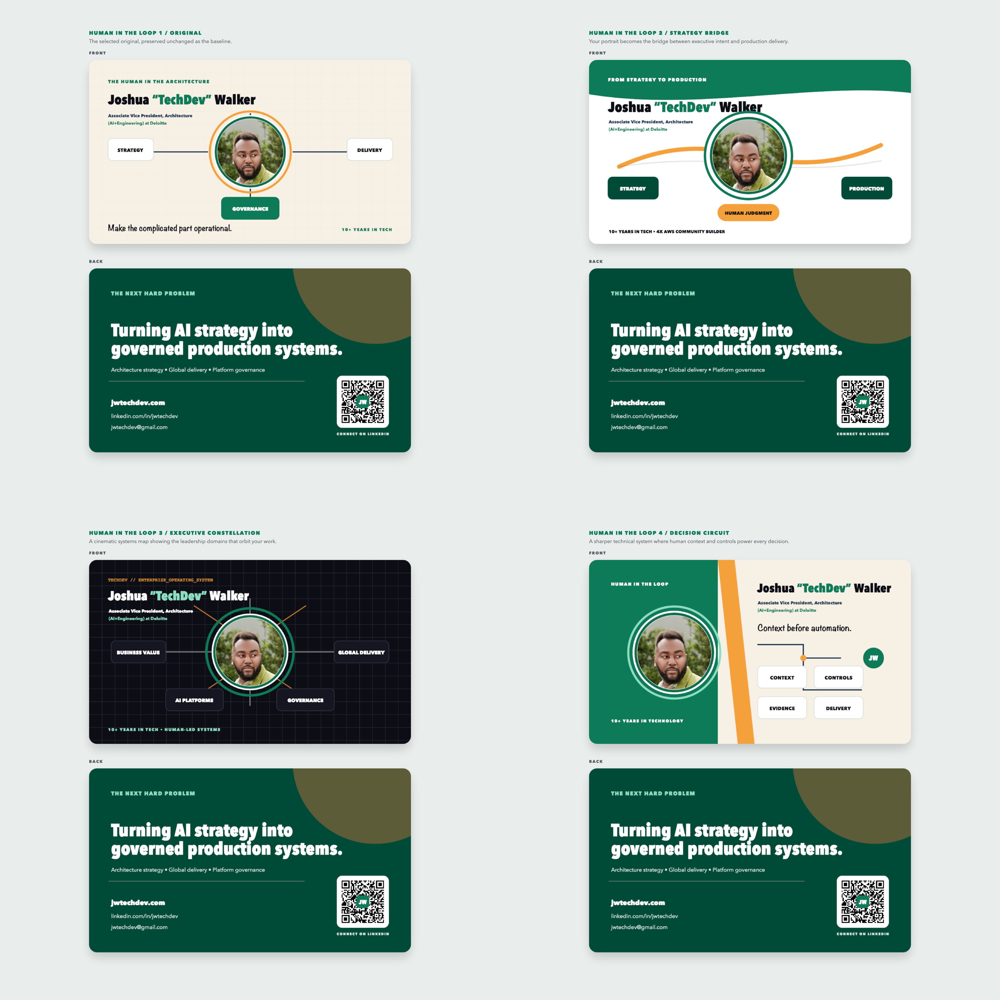

AFROTECH / HUMAN IN THE LOOP
The selected design and its spin-offs
The original bottom-right concept remains intact as Option 1. Three additional directions explore strategy, executive systems leadership, and human-centered production controls.
